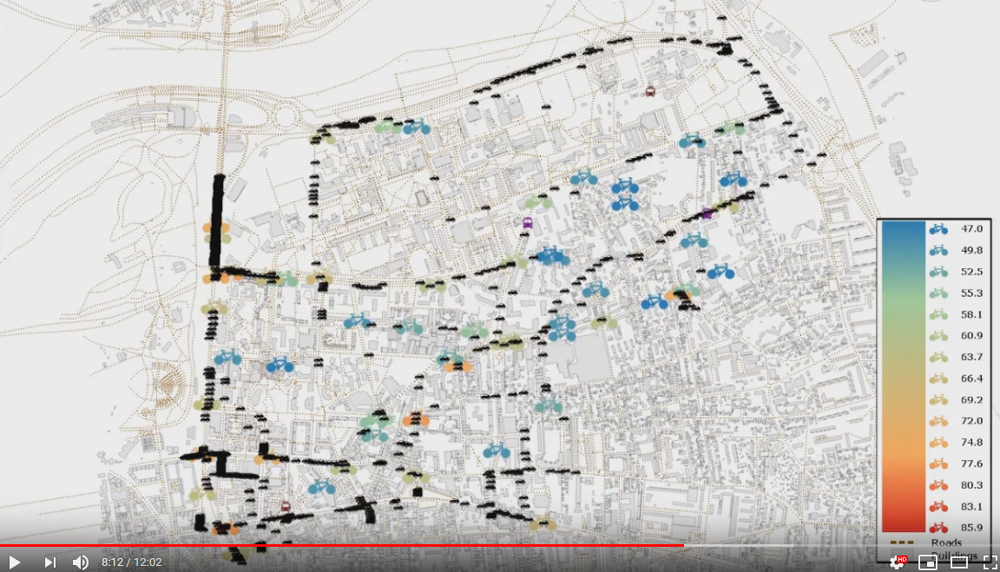
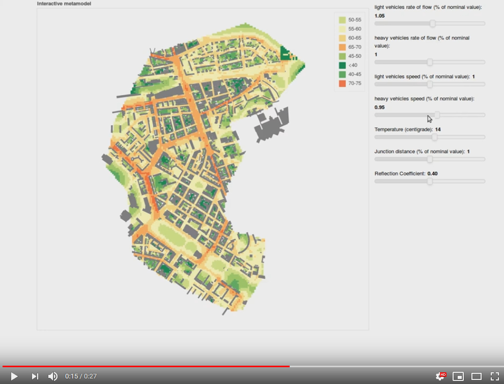
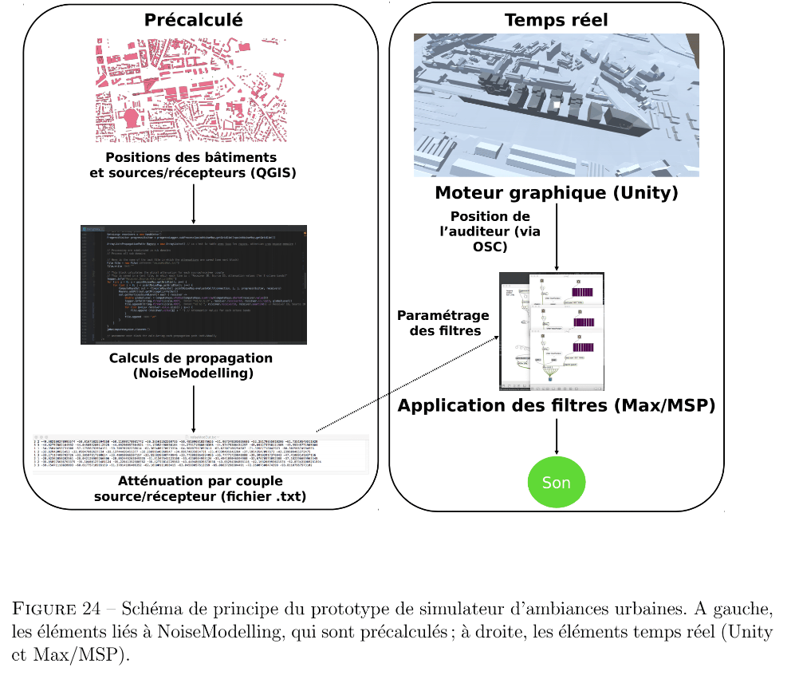

Scientific production
Below is a non-exhaustive list of articles or presentations in which NoiseModelling is used.
Standard Noise maps
BACLET S., VENKATARAMAN S., RUMPLER R., BILLSJÖ R., HORVATH J., ÖSTERLUND P. E., , From strategic noise maps to receiver-centric noise exposure sensitivity mapping, Transportation Research Part D: Transport and Environment, 2022, vol. 102 (Noise mapping, Road traffic noise, Population exposure, Road network sensitivity)
GRAZIUSO G., FRANCAVILLA A. B., MANCINI S., GUARNACCIA C., Open-source software tools for strategic noise mapping: a case study, Journal of Physics: Conference Series, 2022, vol. 2162, 012014
AUMOND P., BOCHER E., ECOTIERE D., FORTIN N., GAUVREAU B., GUILLAUME G., PETIT G., Improvement of city noise map production processes and sensitivity analysis to noise models inputs, Euronoise Conference Proceedings, 2021, p. 1128
BACLET S., VENKATARAMAN S., RUMPLER R., A methodology to assess the impact of driving noise from individual vehicles in an urban environment, Resource Efficient Vehicles Conference, 2021.
NOURMOHAMMADI Z., LILASATHAPORNKIT T., ASHFAQ M., et al., Mapping Urban Environmental Performance with Emerging Data Sources: A Case of Urban Greenery and Traffic Noise in Sydney, Australia, Sustainability, 2021, vol. 13, n° 2, p. 605
BAEZA J. L., SIEVERT J. L., LANDWEHR A., et al., CityScope Platform for Real-Time Analysis and Decision-Support in Urban Design Competitions, International Journal of E-Planning Research (IJEPR), 2021, vol. 10, n° 4, p. 1-17
WANG Z., NOVACK T., YAN Y., ZIPF A., Quiet Route Planning for Pedestrians in Traffic Noise Polluted Environments, IEEE Transactions on Intelligent Transportation Systems, 2020
AUMOND P., FORTIN N., CAN A., Overview of the NoiseModelling open-source software version 3 and its applications, INTER-NOISE and NOISE-CON Congress and Conference Proceedings, 2020, vol. 261, n°4, p. 2005-2011
Dynamic Noise maps
LE BESCOND V., CAN A., AUMOND P., GASTINEAU P., Open-source modeling chain for the dynamic assessment of road traffic noise exposure, Transportation Research Part D: Transport and Environment, 2021, vol. 94, 102793 (Watch a short presentation on Youtube)
CAN A., AUMOND P., BECARIE, C., LECLERCQ, L., Dynamic approach for the study of the spatial impact of road traffic noise at peak hours, Proceedings of the 23rd International Congress on Acoustics, Aachen, Allemagne, 09-13 September, 2019
QUINTERO G., AUMOND P., CAN A., BALASTEGUI A., ROMEU J., Statistical requirements for noise mapping based on mobile measurements using bikes, Applied Acoustics, 156, 271-278, 2019

https://www.youtube.com/watch?v=jl8tASDr-uQ&t=133s
CAN A., AUMOND P., BECARIE C., LECLERCQ L., Approche dynamique pour l’étude de l’emprise spatiale du bruit de trafic routier aux heures de pointe, Recherche en Transport Sécurité, 2018
Probabilistic & Multi-sources Noise maps
ALIONTE C-G., COMEAGA D-C., Noise assessment of the small-scale wind farm, In : E3S Web of Conferences. EDP Sciences, 2019
AUMOND P., CAN A., Probabilistic modeling framework to predict traffic sound distribution, Proceedings of Euronoise, Hersonissos, Crete, 27-31 May 2018
AUMOND P., JACQUESSON L., CAN A., Probabilistic modeling framework for multisource sound mapping, Applied Acoustics, 139, 34-43, 2018
Sensitivity Analysis & data assimilation
LESIEUR A., MALLET V., AUMOND P., CAN A., Data assimilation for urban noise mapping with a meta-model, Applied Acoustics, 2021, vol. 176, 107938,
AUMOND P., CAN A., MALLET V., GAUVREAU B., GUILLAUME G., Global sensitivity analysis of a noise mapping model based on open-source software, Applied Acoustics, 2021, vol. 176, 107899
LESIEUR A., AUMOND P., MALLET V., et al., Meta-modeling for urban noise mapping. The Journal of the Acoustical Society of America, 2020, vol. 148, no 6, p. 3671-3681

https://www.youtube.com/watch?v=orc5ZbN2dlY
AUMOND P., CAN A., MALLET V., GAUVREAU B., GUILLAUME G., Global sensitivity analysis for urban noise modelling, Proceedings of the 23rd International Congress on Acoustics, Aachen, Allemagne, 09-13 September, 2019
Auralisation
ROHRLICH F. , VERRON C. (Noise Makers), Captation et Simulation d’Ambiances Urbaines Spatialisées, 2018-2019
{kind=link}
